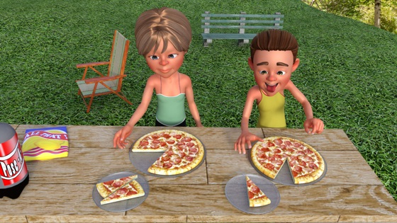

Alicia cumple hoy 12 años. Celebra su fiesta de cumpleaños en el parque con sus amigos del cole, sus amigos del parque y su familia.
¡Ponte en situación!
- La tarta: han cortado la tarta en 8 porciones. Cada una es \(\frac18\). La tarta intercala 5 capas de chocolate blanco con 4 capas de galleta; es decir, lleva \(\frac59\) de chocolate blanco y \(\frac49\) de galleta. Al soplar las velas, se han apagado 8 de 12, que son \(\frac23\) partes.
- La bebida: en casa prepararon dos jarras de limonada. Como la parte de limón que contiene una jarra es mayor que la de la otra, su sabor es más fuerte. De la primera jarra quedan \(\frac35\), y de la segunda \(\frac23\). Podríamos preguntarnos... ¿Cuánta limonada hay en total?, ¿si juntamos toda la limonada en una jarra, nos sobrará algo?, ¿qué pasaría con el sabor a limón?, etc.
- La comida: la abuela de Alicia ha traído dos pizzas. Cada una está cortada en 12 porciones. Una niña tiene \(\frac{2}{12}\), que es \(\frac16\) de la pizza, y un niño \(\frac{1}{12}\). En total quedarán \(\frac{21}{12}\) de pizza, que son siete cuartos de pizza, o lo que es lo mismo, una pizza entera y tres cuartos.
- La edad: Alicia cumple hoy \(\frac15\) de la edad de su abuela, que tiene 60, y \(\frac13\) de la de su padre, que tiene 36. La edad de su padre es \(\frac35\) de la de su abuela.
En este cumpleaños hay muchas fracciones y operaciones con ellas… ¿se te ocurren más?

Javier Cayetano (Proyecto CREA. Servicio de Tecnologías de la Educación. Consejería de Educación y Empleo. Junta de Extremadura). Una fiesta de cumpleaños con fracciones (CC BY-SA)